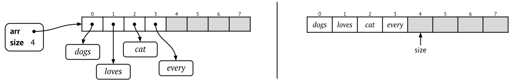

6.3 Array-based sequences
In the last section we showed how to implement stacks and queues using linked lists. But we already have a built-in data structure which stores elements in some kind of order – arrays. Can we use arrays to implement stacks and queues too?
Yes, and we will show how to do that here. There is one big problem with using arrays – they are always fixed size. So if we have an array of size 100 we can only have a stack or queue with at most 100 elements. This is a serious restriction, and in the next section we will show how to solve that – a dynamic array has the same features as a normal array, but it can change its size dynamically. But in this section we will for now assume that we have a fixed maximum number of elements.
6.3.1 Array-based stacks
An array-based stack uses an internal array as underlying storage, and this array has a predefined size. In this example the underlying array has an internal size of 100:
datatype ArrayStack:
arr = new Array(100) // Internal array containing the stack elements
size = 0 // The size of the stackNote that 100 is the internal capacity of the stack, it is not the actual size. When the stack is created it should be empty, and therefore the initial stack size is 0.
An important design decision is which end of the array should represent the top of the stack. It might be tempting to let the top be the first element in the array, that is, the element at position 0. However, this is inefficient: whenever we want to push to or pop from the stack, we would have to shift all elements in the array one position to the left or to the right.
Here we discuss where the top of the stack should be stored.
A much better solution is to have the top be the last element, that is, the element at position n-1 (if n is the size of the stack). Then we do not have to shift around a lot of elements, but instead we can move the stack pointer to the left or the right. Figure 6.4 shows two ways of viewing the same array-based stack with four elements.

Pushing and popping
In an array-based stack we do not need a separate pointer to the
top, because it is the same as the size variable
(minus 1). That is, the size points to the index of the next
free array cell. Therefore, to push a value onto the stack, we assign
arr[size] and then increase the size. (Note that for now we
ignore the possibility that the stack is full.)
push(stack, value):
stack.arr[stack.size] = value
stack.size += 1
Here we show how to push to an array-based stack.
Here is a proficiency exercise about pushing to array-based
stacks.
To pop an element from the stack we do the reverse of pushing: first we decrease the size, then we remember the result in a temporary variable. After that we can clear the old top cell in the array and return the result.
pop(stack):
stack.size -= 1
result = stack.arr[stack.size]
stack.arr[stack.size] = null // For garbage collection
return resultNote that it is important that we clear the old top value (by assigning the cell to null). Otherwise the old value will still be referred to by the internal array, and then the automatic garbage collection cannot remove the object. In addition, we assume that the stack is non-empty.
Here we show how to pop from an array-based stack.
Here is a proficiency exercise about popping from array-based
stacks.
Example: Implementing two stacks using one array
If you need to use two stacks at the same time, you can take advantage of the one-way growth of a stack by using a single array to store two stacks that grow toward each other from each end, hopefully leading to less wasted space. However, this only works well when the space requirements of the stacks are inversely correlated. In other words, ideally when one stack grows, the other will shrink. This is particularly effective when elements are taken from one stack and given to the other. If instead both stacks grow at the same time, then the free space in the middle of the array will be exhausted quickly.
6.3.2 Array-based queues
An array-based queue is somewhat tricky to implement effectively. A simple conversion of the array-based stack is not efficient:
If we let the queue front be the same as the stack top – that is, the last element in the array – then we can easily enqueue new elements by simply moving the front pointer. But then the rear will be the first array element, and if we want to dequeue it we have to shift all the remaining elements to the left in the array. This is time-consuming and dequeueing becomes linear, O(n).
If we instead let the front be the first array element, dequeueing becomes easy. But then we will instead have to shift all elements to be able to enqueue, again giving complexity O(n).
Array queue – positions.
The solution is to have two pointers, to the front and to the rear, and let both of them change dynamically. This means that we relax the requirement that the queue must occupy the start of the array. The queue simply consists of all elements between the front and the rear cells. Now enqueueing and dequeueing becomes rather similar to each other:
- To enqueue an element, we increase the rear pointer.
- To dequeue an element, we instead increase the front pointer.
Array queue – drifting.
Note that both pointers will increase, they will never decrease. After a while, when we have enqueued enough elements, the rear pointer will reach the end of the array, and this will happen even if we have dequeued all previous elements! For example, suppose that we run enqueue directly followed by a dequeue, and we do this 100 times. The queue itself will never contain more than one element, but after repeating 100 times the rear pointer has reached the end of the array (assuming that we allocated space for 100 elements). The next time we enqueue an element the program will crash, because we try to refer to an array cell that does not exist.
Array queue – bad representation.
Queues as circular arrays
Both enqueueing and dequeueing will increase the front and rear positions – the variables will never decrease. This causes the queue to drift within the array, and at some point the rear will hit the end of the array. We might get into a situation where the queue itself only occupies a few array cells, but the rear is still at the very end.
This “drifting queue” problem can be solved by pretending that the array is circular, meaning that we can go from the last array cell directly to the first. If the front pointer points somewhere in the middle of the array there is plenty of space at the beginning – so we can “wrap around” the rear pointer and let it start from the beginning. And when we have dequeued a lot of elements, front will reach the end of the array – so we treat it in the same way and let it wrap around too.
Figure 6.5 shows two versions storing exactly the same 4-element queue. The element that was added most recently is “dogs”, which is what the rear points to, and front points to “every”, which is the one that has waited the longest. When we want to enqueue a new element, it will be assigned to the empty cell after rear.
Circular array queue.
There remains one more subtle problem to the array-based queue implementation. How can we recognise when the queue is empty or full? If the array has size n, then it can store queues of size 0 to n, therefore it can store n+1 different queue lengths. But both when the queue is empty (size 0) and when it is full (size n), the front variable is one larger than rear. In other words, if \mathit{front}=\mathit{rear}+1, is the queue empty or full?
Circular array queue – empty.
One obvious solution is to keep an explicit count of the number of elements in the queue, that is, to use a special size variable. Another solution is to set front and rear to some unused number (such as -1) whenever the queue becomes empty. Which of these solutions to adopt is purely a matter of the implementor’s taste in such affairs. Our choice here is to keep an explicit count of the number of elements, in a variable size, because this will make the code more similar to our other implementations.
datatype ArrayQueue:
arr = new Array(100) // Internal array containing the queue elements.
size = 0 // The size of the queue.
front = 0 // Index of the front element.
rear = -1 // Index of the rear element.Enqueueing and dequeueing
When enqueueing, we increase the rear pointer (modulo the size of the internal array).
enqueue(queue, x):
queue.rear = (queue.rear + 1) mod queue.arr.size // Circular increment
queue.arr[queue.rear] = x
queue.size += 1When dequeueing, we increase the front pointer (modulo the size of the internal array). Just as for array-based stacks, we have to clear the array cell that was dequeued, because otherwise it will never be garbage collected.
dequeue(queue):
result = queue.arr[queue.front]
queue.arr[queue.front] = null // For garbage collection
queue.front = (queue.front + 1) mod queue.arr.size // Circular increment
queue.size -= 1
return resultAgain, we ignore the possibility that the internal array is full or that the queue is empty.